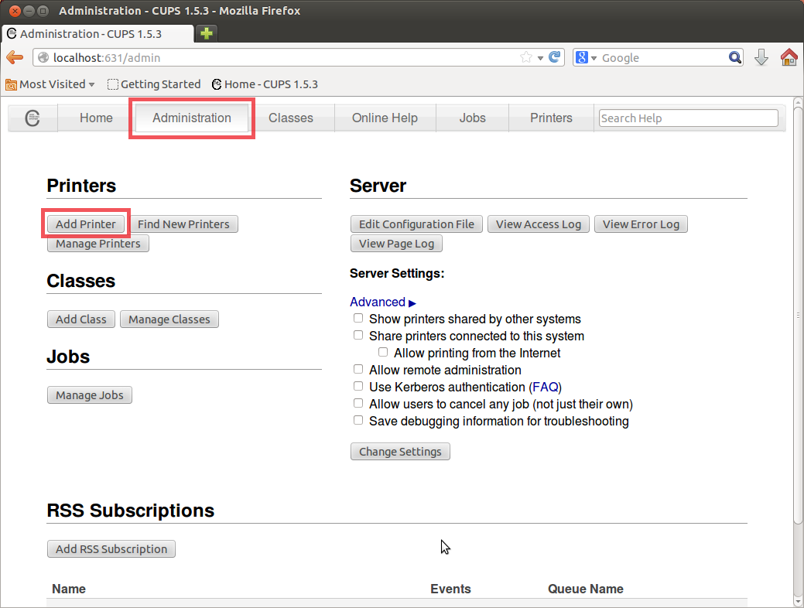

This software is distributed under a non-free proprietary license.
Refer to the attached EULA.en.txt for the license details.
Copyright of all source code composing binary files of this software is held by SEIKO EPSON CORPORATION, and binary files are distributed under the SEIKO EPSON CORPORATION SOFTWARE LICENSE AGREEMENT (refer to EULA.en.txt).
This software is a printer driver for printing on a TM/BA series printer from Linux using CUPS.
Features:
- A raster type printer driver for TM/BA series printers.
- Supports both thermal and impact dot printers.
- Can instantly print out images, texts, and drawings displayed by an application.
- Various printer controls on paper cut timing, cash drawers, print speed, blank line saving, inverted printing, etc.
This software supports TM/BA series printers.
Available printer models:
TM BA Thermal : TM/BA generic thermal
(Models supported by "TM BA Thermal")
- TM-H6000II Receipt
- TM-H6000III Receipt
- TM-H6000IV Receipt
- TM-m10
- TM-m30
- TM-T20
- TM-T20II
- TM-T70
- TM-T70 ANK
- TM-T70II
- TM-T70II ANK
- TM-T82
- TM-T82II
- TM-T88IV
- TM-T88V
- TM-T88VI
- TM-T90
- TM-T90 ANK
- TM-T90II
- BA-T500II
TM Impact Receipt : TM generic impact receipt
(Models supported by "TM Impact Receipt")
- TM-U120
- TM-U120II
- TM-U220
- TM-U230
- TM-U375 Receipt
- TM-U675 Receipt
TM Slip : TM generic slip
(Models supported by "TM Slip")
- TM-H6000II Slip
- TM-H6000III Slip
- TM-H6000IV Slip
- TM-U375 Slip
- TM-U675 Slip
- USB
- Serial
- Parallel
- Ethernet
The package (tmx-cups-2.0.3.0.tar.gz) includes the following.
| tmx-cups | ←Top directory | |||
| |– – | EULA.en.txt ←End User License Agreement | |||
| |– – | EULA.ja.txt ←End User License Agreement (Japanese) | |||
| |– – | EULA.zh_CN.txt ←End User License Agreement (Chinese) | |||
| |– – | install.sh ←Install script | |||
| |– – | install-sc.sh ←Install script (Chinese) | |||
| |– – | uninstall.sh ←Uninstall script | |||
| |– – | manual <– Manual directory | |||
| | | |– – | index.html | ←index | |
| | | |– – | TmxDriverManual.en.html | ←Printer Driver Manual | |
| | | |– – | TmxDriverManual.ja.html | ←Printer Driver Manual (Japanese) | |
| | | |– – | TmxDriverManual.zh_CN.html | ←Printer Driver Manual (Chinese) | |
| | | |– – | TM-Thermal_Manual.en.html | ←TM/BA Thermal Model Manual | |
| | | |– – | TM-Impact_Receipt_Manual.en.html | ←TM Impact Receipt Model Manual | |
| | | |– – | TM-Slip_Manual.en.html | ←TM Slip Model Manual | |
| | | |– – | TM-H6000II_Receipt_Manual.en.html | ←TM-H6000II Receipt Model Manual | |
| | | |– – | TM-H6000II_Slip_Manual.en.html | ←TM-H6000II Slip Model Manual | |
| | | |– – | TM-H6000III_Receipt_Manual.en.html | ←TM-H6000III Receipt Model Manual | |
| | | |– – | TM-H6000III_Slip_Manual.en.html | ←TM-H6000III Slip Model Manual | |
| | | |– – | TM-H6000IV_Receipt_Manual.en.html | ←TM-H6000IV Receipt Model Manual | |
| | | |– – | TM-H6000IV_Slip_Manual.en.html | ←TM-H6000IV Slip Model Manual | |
| | | |– – | TM-m10_Manual.en.html | ←TM-m10 Model Manual | |
| | | |– – | TM-m30_Manual.en.html | ←TM-m30 Model Manual | |
| | | |– – | TM-T20_Manual.en.html | ←TM-T20 Model Manual | |
| | | |– – | TM-T20II_Manual.en.html | ←TM-T20II Model Manual | |
| | | |– – | TM-T70_Manual.en.html | ←TM-T70 Model Manual | |
| | | |– – | TM-T70ANK_Manual.en.html | ←TM-T70 ANK Model Manual | |
| | | |– – | TM-T70II_Manual.en.html | ←TM-T70II Model Manual | |
| | | |– – | TM-T70IIANK_Manual.en.html | ←TM-T70II ANK Model Manual | |
| | | |– – | TM-T82_Manual.en.html | ←TM-T82 Model Manual | |
| | | |– – | TM-T82_Manual.zh_CN.html | ←TM-T82 Model Manual (Chinese) | |
| | | |– – | TM-T82II_Manual.en.html | ←TM-T82II Model Manual | |
| | | |– – | TM-T82II_Manual.zh_CN.html | ←TM-T82II Model Manual (Chinese) | |
| | | |– – | TM-T88IV_Manual.en.html | ←TM-T88IV Model Manual | |
| | | |– – | TM-T88V_Manual.en.html | ←TM-T88V Model Manual | |
| | | |– – | TM-T88VI_Manual.en.html | ←TM-T88VI Model Manual | |
| | | |– – | TM-T90_Manual.en.html | ←TM-T90 Model Manual | |
| | | |– – | TM-T90ANK_Manual.en.html | ←TM-T90 ANK Model Manual | |
| | | |– – | TM-T90II_Manual.en.html | ←TM-T90II Model Manual | |
| | | |– – | BA-T500II_Manual.en.html | ←BA-T500II Model Manual | |
| | | |– – | TM-U120_Manual.en.html | ←TM-U120 Model Manual | |
| | | |– – | TM-U120II_Manual.en.html | ←TM-U120II Model Manual | |
| | | |– – | TM-U220_Manual.en.html | ←TM-U220 Model Manual | |
| | | |– – | TM-U230_Manual.en.html | ←TM-U230 Model Manual | |
| | | |– – | TM-U375_Receipt_Manual.en.html | ←TM-U375 Receipt Model Manual | |
| | | |– – | TM-U375_Slip_Manual.en.html | ←TM-U375 Slip Model Manual | |
| | | |– – | TM-U675_Receipt_Manual.en.html | ←TM-U675 Receipt Model Manual | |
| | | |– – | TM-U675_Slip_Manual.en.html | ←TM-U675 Slip Model Manual | |
| | | |– – | css <–css directory | ||
| | | | | |– – | driver-manual.css | ←css for Driver Manuals |
| | | | | `– – | printer-manual.css | ←css for Model Manuals |
| | | |– – | img <–Image file directory | ||
| | | | | |– – | 6-1.png | |
| | | | | |– – | 6-2.png | |
| | | | | |– – | 6-3.png | |
| | | | | |– – | 6-4.png | |
| | | | | |– – | 6-5.png | |
| | | | | |– – | 6-6.png | |
| | | | | |– – | 6-7.png | |
| | | | | |– – | 6-8.png | |
| | | | | `– – | 6-9.png | |
| | | `– – | text <–Manual(Text) file directory | ||
| | | |– – | TM-Thermal_Manual.ja.txt | ←TM/BA Thermal Model Manual (Japanese) | |
| | | |– – | TM-Impact_Receipt_Manual.ja.txt | ←TM Impact Receipt Model Manual (Japanese) | |
| | | |– – | TM-Slip_Manual.ja.txt | ←TM Slip Model Manual (Japanese) | |
| | | |– – | TM-H6000II_Receipt_Manual.ja.txt | ←TM-H6000II Receipt Model Manual (Japanese) | |
| | | |– – | TM-H6000II_Slip_Manual.ja.txt | ←TM-H6000II Slip Model Manual (Japanese) | |
| | | |– – | TM-H6000III_Receipt_Manual.ja.txt | ←TM-H6000III Receipt Model Manual (Japanese) | |
| | | |– – | TM-H6000III_Slip_Manual.ja.txt | ←TM-H6000III Slip Model Manual (Japanese) | |
| | | |– – | TM-H6000IV_Receipt_Manual.ja.txt | ←TM-H6000IV Receipt Model Manual (Japanese) | |
| | | |– – | TM-H6000IV_Slip_Manual.ja.txt | ←TM-H6000IV Slip Model Manual (Japanese) | |
| | | |– – | TM-m10_Manual.ja.txt | ←TM-m10 Model Manual (Japanese) | |
| | | |– – | TM-m30_Manual.ja.txt | ←TM-m30 Model Manual (Japanese) | |
| | | |– – | TM-T20_Manual.ja.txt | ←TM-T20 Model Manual (Japanese) | |
| | | |– – | TM-T20II_Manual.ja.txt | ←TM-T20II Model Manual (Japanese) | |
| | | |– – | TM-T70_Manual.ja.txt | ←TM-T70 Model Manual (Japanese) | |
| | | |– – | TM-T70ANK_Manual.ja.txt | ←TM-T70 ANK Model Manual (Japanese) | |
| | | |– – | TM-T70II_Manual.ja.txt | ←TM-T70II Model Manual (Japanese) | |
| | | |– – | TM-T70IIANK_Manual.ja.txt | ←TM-T70II ANK Model Manual (Japanese) | |
| | | |– – | TM-T88IV_Manual.ja.txt | ←TM-T88IV Model Manual (Japanese) | |
| | | |– – | TM-T88V_Manual.ja.txt | ←TM-T88V Model Manual (Japanese) | |
| | | |– – | TM-T88VI_Manual.ja.txt | ←TM-T88VI Model Manual (Japanese) | |
| | | |– – | TM-T90_Manual.ja.txt | ←TM-T90 Model Manual (Japanese) | |
| | | |– – | TM-T90ANK_Manual.ja.txt | ←TM-T90 ANK Model Manual (Japanese) | |
| | | |– – | TM-T90II_Manual.ja.txt | ←TM-T90II Model Manual (Japanese) | |
| | | |– – | BA-T500II_Manual.ja.txt | ←BA-T500II Model Manual (Japanese) | |
| | | |– – | TM-U120_Manual.ja.txt | ←TM-U120 Model Manual (Japanese) | |
| | | |– – | TM-U120II_Manual.ja.txt | ←TM-U120II Model Manual (Japanese) | |
| | | |– – | TM-U220_Manual.ja.txt | ←TM-U220 Model Manual (Japanese) | |
| | | |– – | TM-U230_Manual.ja.txt | ←TM-U230 Model Manual (Japanese) | |
| | | |– – | TM-U375_Receipt_Manual.ja.txt | ←TM-U375 Receipt Model Manual (Japanese) | |
| | | |– – | TM-U375_Slip_Manual.ja.txt | ←TM-U375 Slip Model Manual (Japanese) | |
| | | |– – | TM-U675_Receipt_Manual.ja.txt | ←TM-U675 Receipt Model Manual (Japanese) | |
| | | `– – | TM-U675_Slip_Manual.ja.txt | ←TM-U675 Slip Model Manual (Japanese) | |
| |– – | filter <– Filter package directory | |||
| | | |– – | tmx-cups_1.2.2-1_i386.deb | ←tmx-cups filter deb package (32bit) | |
| | | |– – | tmx-cups_1.2.2-1_amd64.deb | ←tmx-cups filter deb package (64bit) | |
| | | |– – | tmx-cups-1.2.2-1.i586.rpm | ←tmx-cups filter rpm package (32bit) | |
| | | `– – | tmx-cups-1.2.2-1.x86_64.rpm | ←tmx-cups filter rpm package (64bit) | |
| |– – | backendbackend <– Backend package directory | |||
| | | |– – | pcs-3.17.0.0-1.i386.deb | ←Communication module deb package (32bit) | |
| | | |– – | pcs-3.17.0.0-1.amd64.deb | ←Communication module deb package (64bit) | |
| | | |– – | pcs-3.17.0.0-1.i586.rpm | ←Communication module rpm package (32bit) | |
| | | |– – | pcs-3.17.0.0-1.x86_64.rpm | ←Communication module rpm package (64bit) | |
| | | |– – | tmbaprn.RHEL.pp | ←SELinux policy module (for RHEL) | |
| | | |– – | tmx-cups-backend-1.2.4.0-1.i386.deb | ←tmx-cups backend deb package (32bit) | |
| | | |– – | tmx-cups-backend-1.2.4.0-1.amd64.deb | ←tmx-cups backend deb package (64bit) | |
| | | |– – | tmx-cups-backend-1.2.4.0-1.i586.rpm | ←tmx-cups backend rpm package (32bit) | |
| | | `– – | tmx-cups-backend-1.2.4.0-1.x86_64.rpm | ←tmx-cups backend rpm package (64bit) | |
| `– – | ppd <– PPD file directory | |||
| |– – | tm-ba-thermal-rastertotmt.ppd.gz | ←PPD file for TM BA Thermal | ||
| |– – | tm-impact-receipt-rastertotmu.ppd.gz | ←PPD file for TM Impact Receipt | ||
| `– – | tm-slip-rastertotmu.ppd.gz | ←PPD file for TM Slip | ||
The rpm package for openSUSE and deb package for Ubuntu are available for each package. In addition,
these packages have package for Intel x86(32bit) and package for Intel x64(64bit) for each architecture.
This software supports the following environments.
Operations in an unsupported environment are not guaranteed.
- openSUSE 11.1
- openSUSE 12.2
- openSUSE 13.1
- Red Hat Enterprise Linux 6.4
- Red Hat Enterprise Linux 6.5
- Ubuntu 9.04
- Ubuntu 12.04
- Ubuntu 14.04
- Intel x86(32bit) architecture.
- Intel x86_64(64bit) architecture.
- CUPS Ver.1.2 or later
http://www.cups.org/
- libusb-1.0.0 or later
http://www.libusb.org/
- openSUSE 11.1 environment
- libusb-1_0-0-1.0.2-2.2
- cups-1.3.9-7.1
- openSUSE 12.2 environment
- libusb-1_0-0-1.0.9-3.1.2
- cups-1.5.3-2.1.5
- openSUSE 13.1 environment
- libusb-1_0-0-1.0.9-8.1.2
- cups-1.5.4-12.17.1
- Red Hat Enterprise Linux(RHEL) 6.4 environment
- libusb1-1.0.9-0.6.rc1.el6
- cups-1.4.2-48.el6_3.3
- Red Hat Enterprise Linux(RHEL) 6.5 environment
- libusb1-1.0.9-0.6.rc1.el6
- cups-1.4.2-52.el6_5.2
- Ubuntu 9.04 environment
- libusb-1.0-0-2:1.0.0-1
- cups-1.3.9-17ubuntu3.4
- Ubuntu 12.04 environment
- libusb-1.0-0-2:1.0.9~rc3-2ubuntu1
- cups-1.5.3-0ubuntu8.6
- Ubuntu 14.04 environment
- libusb-1.0-0-2:1.0.17-1ubuntu2
- cups-1.7.2-0ubuntu1.5
- openSUSE 11.1/12.2/13.1 environment
How to check libusb-1_0-0
1. Checking names of the installed packages.
$ rpm -qa | grep libusb-1_0-0
libusb-1_0-0-1.0.2-2.2←Displayed details
2. Checking details of the package displayed by the above command.
$ rpm -qi libusb-1_0-0-1.0.2-2.2
How to check cups
1. Checking names of the installed packages.
$ rpm -qa | grep cups
···
cups-1.3.9-7.1←Displayed details
···
2. Checking details of the package displayed by the above command.
$ rpm -qi cups-1.3.9-7.1
- Red Hat Enterprise Linux(RHEL) 6.4/6.5 environment
How to check libusb1-1.0
1. Checking names of the installed packages.
$ rpm -qa | grep libusb1
libusb1-1.0.9-0.6.rc1.el6.x86_64←Displayed details
2. Checking details of the package displayed by the above command.
$ rpm -qi libusb1-1.0.9-0.6.rc1.el6.x86_64
How to check cups
1. Checking names of the installed packages.
$ rpm -qa | grep cups
···
cups-1.4.2-48.el6_3.3.x86_64←Displayed details
···
2. Checking details of the package displayed by the above command.
$ rpm -qi cups-1.4.2-48.el6_3.3.x86_64
- Ubuntu 9.04/12.04/14.04 environment
How to check libusb-1.0-0
$ dpkg-query -l libusb-1.0-0
How to check cups
$ dpkg-query -l cups
* Check to see if you are connected to the Internet before obtaining
the required package.
- openSUSE 11.1 environment
1. Download the package for libusb-1_0-0.
You can download the package for openSUSE from the following site at the time of writing, May 2015.
- x86 (32-bit) architecture
http://download.opensuse.org/distribution/11.4/repo/oss/suse/i586/libusb-1_0-0-1.0.8-4.1.i586.rpm
- x86_64 (64-bit) architecture
http://download.opensuse.org/distribution/11.4/repo/oss/suse/x86_64/libusb-1_0-0-1.0.8-4.1.x86_64.rpm
2. Install the downloaded package.
Example) x86 (32-bit) architecture
# rpm -i libusb-1_0-0-1.0.8-4.1.i586.rpm
Note)
! You need root privileges for the installation.
- openSUSE 12.2/13.1 environment
Because libusb-1_0-0 has been installed by default, you don’t have to install it.
- Red Hat Enterprise Linux(RHEL) 6.4/6.5 environment
Because libusb1-1.0 has been installed by default, you don’t have to install it.
- Ubuntu 9.04 environment
1. Use the following command to install libusb-1.0-0.
# apt-get install libusb-1.0-0=2:1.0.0-1
2. Use the following command to update the CUPS package.
# apt-get install cups
Note)
! You need root privileges for the installation.
! If the necessary package is not installed by the above procedure, run the following command and reinstall the package.
# apt-get update
- Ubuntu 12.04/14.04 environment
Because libusb-1.0-0 has been installed by default, you don’t have to install it.
* Run install.sh.
Run install.sh by either clicking the install.sh icon. Or,
enter to the directory where the installation package has been expanded,
then run install.sh by typing the following in the command line prompt.
# ./install.sh
Note)
! You need root privileges for the installation.
If you do not have root privileges, install.sh will execute the sudo command. Type the password.
! Switch the printer off before installing the driver.
* If you have a previous version of TM/BA Series Printer Driver for Linux installed,
you must uninstall the previous version first. When previous version found,
detailed information and the message asking if you wish to uninstall
will be shown.
If no problem, enter "y" and press the Enter key.
Message example)
Incompatible version of TM/BA series printer driver found!
Before the installation, package:"tmt-cups-1.3.x.x" must be uninstalled.
Packages to be uninstalled:
tmt-cups-1.0.3-1
epson-cups-escpos-1.0.12.0-1
ep-escpos-2.3.2.90-1
ep-core-2.3.2.90-1
ep-client-2.3.2.90-1
Uninstall the incompatible printer driver: tmt-cups-1.3.x.x [y/n]? y
...(Omitted)
- After all uninstallation is finished, if any printer 2is using the
uninstalled driver, the message asking if you wish to delete the
printers will be shown.
If no problem, enter "y" and press the Enter key.
(If you don’t delete the printers, they will remain in error status.)
(When no printer is using the uninstalled driver, the confirmation will be skipped.)
Message example)
Delete printers that use the driver you have uninstalled ahead [y/n]? y
Deleting printer: TM-T88IV
* After determining the environment, information about the package to be
installed and the distribution will be displayed.
If the information is correct, enter "y" and press the Enter key.
Example) Message for openSUSE 13.1 x86(32bit) architecture
Install tmx-cups-2.0.3.0 into openSUSE 13.1 x86(32bit) [y/n]?
* If the displayed distribution is not the one you are installing,
enter "n" and press the Enter key. The distribution selection
screen is displayed. Enter a number for your selection, and press
the Enter key.
Enter "0" and press the Enter key to cancel the installation.
Please select your distribution.
1.RHEL 6.4 x86(32bit)
2.RHEL 6.4 x86_64(64bit)
3.RHEL 6.5 x86(32bit)
4.RHEL 6.5 x86_64(64bit)
5.Ubuntu 12.04 x86(32bit)
6.Ubuntu 12.04 x86_64(64bit)
7.Ubuntu 14.04 x86(32bit)
8.Ubuntu 14.04 x86_64(64bit)
9.Ubuntu 9.04 x86(32bit)
10.Ubuntu 9.04 x86_64(64bit)
11.openSUSE 11.1 x86(32bit)
12.openSUSE 11.1 x86_64(64bit)
13.openSUSE 12.2 x86(32bit)
14.openSUSE 12.2 x86_64(64bit)
15.openSUSE 13.1 x86(32bit)
16.openSUSE 13.1 x86_64(64bit)
Select number [0(cancel)/1/2/3/4/5/6/7/8/9/10/11/12/13/14/15/16]?
* Installation will start as you select the distribution
* Device port setting
You need to set a port when not using a USB port.
Please refer to "7. Port Settings" for details.
* Registering the printer to CUPS
Turn the printer on before registering the printer to CUPS.
Open CUPS WebAdmin <http://localhost:631/> on a web browser
to register the printer to CUPS.
Refer to CUPS information using the following URLs.
http://localhost:631/help/
http://www.cups.org/
- Select the [Administration] tab and click "Add Printer."

- Select "EPSON TM/BA Printer" in the Device selection screen, then click "Continue."
- The "Add New Printer" screen appears. Enter the Printer Name,
Location, and Description, then click "Continue."
- Select Make: "Epson" in the Make/Manufacturer selection screen,
then click "Continue."
Select the TM generic model corresponding the registering printer
model, then click "Add Printer."
Each printer model manual describes which TM generic model should
be used for the printer.
- The "Set Printer Options" screen appears.
Confirm and set the printer options.
Refer to the printer model manual for details.
Example) For TM-T88V
TM-T88V_Manual.en.html
Note)
! Cancel the automatic recognition screen if it is displayed by the printer setting tool included in the distribution.
Port setting is required if port other than USB is used.
Please execute one of the following port setting tools depending on the
situation:
| - /usr/sbin/tmportconfig | Menu based port setting tool |
| - /usr/sbin/tmpcsconfig | Command line based port setting tool |
For USB, the port will be added automatically by PnP function when the
device is connected while during online. So usually port setting isn’t
needed.
A customization ID (-secc0000 etc.) is added for the customized version driver after the port setting tool name. However, for the simplification, the customization ID is omitted in the rest of this manual or in model manuals.
Note)
! You need root privileges for port settings.
! Turn the printer off while setting the port.
Execute tmportconfig as root.
# tmportconfig
> TM/BA Printer Port Configuration Tool
>
> Please choose one of the following options:
> ···
Input the number value of "Add new port", press Enter key.
> Add New Port
>
> Please choose one of the following device types:
> ···
Input the value of "EPSON TM/BA Printer",
then press the Enter key.
> Communications Type
>
> Please choose one of the following port types:
> ···
Input the value that corresponds to the port’s interface type,
then press the Enter key.
- Serial Port
> Serial Port Name
>
> Please choose one of the following port names:
> ···
Select the serial port to be used.
> Baud Rate
Select one of 1200, 2400, 4800, 9600, 19200, 38400, 57600, 115200 bps.
> Parity
Select one from None, Odd, Even.
> Stop Bits
Select one from 1 bit, 2 or more bits.
> Flow Control
Select either Hardware or Xon/Xoff
- Parallel Port
> Parallel Port Name
>
> Please choose one of the available parallel ports:
> ···
Select the parallel port to be used.
- Ethernet Port
> Ethernet Port Name
>
> Please input an IP address: (ex 192.168.0.10)
Input IP address then press the Enter key.
> Do you want to save the changes you have made (Y or N)
Input Y then press the Enter key.
Execute tmpcsconfig with add option as root.
Example)
# tmpcsconfig add serial /dev/ttyS0
| > New port added successfully: | ||
| > PortName | : ESDPRT002 | |
| > | PortType | : Serial(1) |
| > | Name | : /dev/ttyS0 |
| > | DeviceType | : PCS_PARAM_DEVICE_TYPE_TM(0) |
| > | Initializing with default setting for Serial... | |
| > | Initial setting done successfully. | |
| > To check the port settings, please use enum ESDPRT002 option. | ||
# tmpcsconfig add parallel /dev/parport0
> ···
# tmpcsconfig add ethernet 192.168.192.100
> ···
You can use exclusively tmpcsconfig for viewing port settings.
(You can’t view detailed port settings with tmportconfig.)
Please execute tmpcsconfig with enum option.
Example)
# tmpcsconfig enum
> PortName : PortType, Port, ModelName
> -----------------------------------------------------------------------------------------------------------------
> ESDPRT001 : PortType=USB, Port=//?/USB#VID_04b8&PID_0202#?, ModelName=TM-T88V
> ESDPRT002 : PortType=Serial, Port=/dev/ttyS0, ModelName=n/a
> ESDPRT003 : PortType=Parallel, Port=/dev/parport0, ModelName=n/a
> ESDPRT004 : PortType=Ethernet, Port=192.168.192.100, ModelName=n/a
Please execute tmpcsconfig with enum <portname> option.
By turning on the printer before the command execution, you can get basic information
("ModelName", "DeviceID").
Example)
# tmpcsconfig enum ESDPRT002
| > PortName | : ESDPRT002 | |
| > | PortType | : Serial(1) |
| > | Name | : /dev/ttyS0 |
| > | ModelName | : TM-T88V |
| > | DeviceType | : PCS_PARAM_DEVICE_TYPE_TM |
| > | DeviceID | : 32(0x20) |
| > | FirmwareVer | : 30.23 ESC/POS |
| > | Baudrate | : 19200 |
| > | Databit | : 8 |
| > | Parity | : None |
| > | Stopbits | : 1 |
| > | Handshake | : AUTO |
| > | BuzzerSelect | : 0 |
| > | Pulse1BeepTimes | : 0 |
| > | Pulse2BeepTimes | : 1 |
# tmpcsconfig e 4
| > PortName | : ESDPRT004 | |
| > | PortType | : Ethernet(4) |
| > | Name | : 192.168.192.100 |
| > | ModelName | : TM-T88V |
| > | DeviceType | : PCS_PARAM_DEVICE_TYPE_TM |
| > | DeviceID | : 32(0x20) |
| > | FirmwareVer | : 30.23 ESC/POS |
| > | MonitorInterval | : 3000 |
| > | MonitorTimeout | : 2000 |
| > | WiredPowerOffCount | : 3 |
| > | WiredPowerOfflineCount | : 1 |
| > | WirelessPowerOffCount | : 3 |
| > | WirelessPowerOfflineCount | : 1 |
| > | PowerOffMonitorTimeout | : 2000 |
| > | PowerOffMonitorCount | : 3 |
| > | PowerOffMonitorInterval | : 1000 |
| > | BuzzerSelect | : 0 |
| > | Pulse1BeepTimes | : 0 |
| > | Pulse2BeepTimes | : 1 |
Execute tmportconfig as root.
# tmportconfig
> TM/BA Printer Port Configuration Tool
>
> Please choose one of the following options:
> ···
Input the number value of "Configure existing port" then press the Enter key.
> Configure Existing Port
>
> Please choose one of the existing ports:
> ···
Input the number value of the port setting to be changed then
press the Enter key.
- Serial Port
> Serial Port Name
>
> Please choose one of the following port names:
> ···
Select the serial port to be used.
> Baud Rate
Select one of 1200, 2400, 4800, 9600, 19200, 38400, 57600, 115200 bps.
> Parity
Select one from None, Odd, Even.
> Stop Bits
Select one from 1 bit, 2 or more bits.
> Flow Control
Select either Hardware or Xon/Xoff
- Parallel Port
> Parallel Port Name
>
> Please choose one of the available parallel ports:
> ···
Select the parallel port to be used.
- Ethernet Port
> Ethernet Port Name
>
> Please input an IP address: (ex 192.168.0.10)
Input IP address then press the Enter key.
> Do you want to save the changes you have made (Y or N)
Input Y then press the Enter key.
Please execute tmpcsconfig with set option.
Example)
# tmpcsconfig set ESDPRT002 baudrate 115200
> SetPortConfigNumber done successfully for
> PortName=ESDPRT002, ControlID=Baudrate, Data=115200
# tmpcsconfig set ESDPRT002 stopbits 1
> ···
# tmpcsconfig set ESDPRT002 parity even
> ···
(using shortened keywords)
# tmpcsconfig s 2 h x
> SetPortConfigNumber done successfully for
> PortName=ESDPRT002, ControlID=Handshake, Data=XON/XOFF
# tmpcsconfig s 4 mi 10000
> SetPortConfigNumber done successfully for
> PortName=ESDPRT004, ControlID=MonitorInterval(MI), Data=10000
When you want to check the settings, please use enum option for the port.
Execute tmportconfig as root.
# tmportconfig
> TM/BA Printer Port Configuration Tool
>
> Please choose one of the following options:
> ···
Input the number value of "Delete existing port" then press the Enter key.
> Delete Existing Port
>
> Please choose one of the existing ports:
> ···
Input the number value of the port to be deleted then press the Enter key.
> Do you want to save the changes you have made (Y or N)
Input Y then press the Enter key.
Please execute tmpcsconfig with delete option.
Example)
# tmpcsconfig delete ESDPRT001
> PortName: ESDPRT001 deleted successfully.
Keywords can be shortened, for example:
{add -> a, enumerate -> e, set -> s, delete -> d},
{ESDPRT001 -> 1 or 001, ESDPRT002 -> 2 or 002, ...},
{baudrate -> ba, stopbits -> st, parity -> p, ...},
{MonitorInterval -> mi, MonitorTimeout -> mt, ...}, and so on.
Example)
# tmpcsconfig s 2 p e
is equivalent to
# tmpcsconfig set ESDPRT002 parity even
When you want to know about shortened keywords, please input ?
instead of correct keyword.
Please take care of the number of options to be specified, or
only error messages will be shown.
Example)
# tmpcsconfig s 2 ? ?
> ···
> Invalid parameter for set option: ?
> Shortened keywords available:
> [Serial port setting]
> ba for Baudrate
> da for Databit
> p for Parity
> st for Stopbits
> h for Handshake
> sendt for SendTimeout
> ···
# tmpcsconfig s 2 p ?
> ···
> Invalid parameter for setting parity option: ?
> Shortened keywords available:
> n for None
> o for Odd
> e for Even
> ···
An ESC/POS command file created by a user is called a user-definition file. Placing a user-defined file at the designated location enables the user to transmit command data in the file to the printer at a fixed timing for each page or job.
File storage folder: /var/lib/tmx-cups/
| Naming convention | Transmission timing |
|---|---|
| {printer_name}_StartJob.prn | When starting to print (after initializing the printer) |
| {printer_name}_EndJob.prn | After printing (before cutting the document) |
| {printer_name}_StartPage.prn | When starting to print each page (after initializing the page) |
| {printer_name}_EndPage.prn | After printing a page (before cutting the page) |
The printer_name indicates the registered printer name to CUPS.
Example)
When the registered printer name is tmtprinter and you
want to output a logo at the beginning, register the
following file.
/var/lib/tmx-cups/tmtprinter_StartJob.prn
Note)
! You need root privilege to store the user-defined file in
/var/lib/tmx-cups/.
! Grant the appropriate permissions to the user-defined file
according to its function. Transmission is not carried out if
the printing user does not have read permission to the
user-defined file.
! The printer may malfunction if the user-defined file contains
any graphic commands whose pattern matches real-time commands.
! If a user-defined file is stored in any of the subordinate
directories, uninstallation of this package does not delete the
directory which contains the file.
You can print the text data if the user-defined file under
/var/lib/tmx-cups contains text data.
Example)
When tmtprinter_StartJob.prn contains the following
line of text data.
======
Welcome!
======
The above text is printed each time you print from tmtprinter
at the top of the print job.
Note)
! The text data may not be printed correctly if the specified character code is other than ASCII.
! Use <LF>(0x0A) for a line feed.
Printing operations are not guaranteed if <CR>(0x0D) is used.
! The text data may not be printed correctly if a line feed <LF> is not present at the end of a line.
! Don’t include paper handling commands such as <FF>(0x0C), or the printer may malfunction.
! The printing result is not guaranteed if the user-defined file
is edited or deleted while printing.
Do not change the user-defined file until printing is complete.
This tool converts an image file into ESC/POS command data.
You can use this tool to print multi-tone graphic data in
a TM/BA series thermal printer with the ability of printing
multi-tone graphic data.
Also, you can print a logo by registering the converted
command data file in the folder where user-defined files are
stored.
/usr/bin/tmbmptobin
A customization ID (_secc0000 etc.) is added for the customized version driver after the multi-tone conversion tool name. However, for the simplification, the customization ID is omitted in the rest of this manual.
Syntax: tmbmptobin [option] input_BMP_file output_BIN_file
| Options (default settings are in []) | ||
| [-16s], -2s | Multi-tone, Monochrome | |
| [-left], -center, -right | Printing position | |
| -b65 to [-b100] to -b135 | Brightness (in 5 units) | |
| -r180 | Rotation by 180 degrees | |
| [-80mm], -58mm | Paper width 80mm or 58mm | |
| [-180dpi], -203dpi | Resolution 180dpi or 203dpi | |
| [-h80] to -h415 | Band Lines 80 to 415 | |
Note)
! Multi-tone option can be used only for the TM/BA series thermal printers that can print multi-tone graphic data. (Ex: TM-T88V)
! The tool supports Windows BMP files only.
Uncompressed 1-bit, 4-bit, 8-bit, and 24-bit BMP files are supported.
! Take care that the image size does not exceed the maximum printable
width of the printer.
The image is not printed if it exceeds the maximum printable width.
Ex) When using 80mm paper, resolution 180dpi: 510 pixels or less
You can insert a log in the print page by registering a binary
file, which has been created by converting an image file into
command data, into the folder where user-defined files are
stored.
See "8. Transmission function for a user-defined file" for details.
The following prints an image file such as a coupon promptly.
Example) When the registered printer name is tmtprinter.
======
# tmbmptobin imagedata.bmp /var/lib/tmx-cups/tmtprinter_StartJob.prn
# echo "" | lpr -P tmtprinter
======
Note)
! The above overwrites tmtprinter_StartDocStartJob.prn if the file is already registered.
The following describes how to uninstall this software.
- Change directory where the installation package expanded,
and execute uninstall.sh shell script.
# ./uninstall.sh
Note)
! You need root privilege to uninstall the software.
! The /var/lib/tmx-cups directory is not deleted if there are any user data under this directory.
! Printers that use this driver can be detected and deleted.
* USB Plug and Play function may fail on specific situation.
If USB device port isn’t added automatically, please reboot the PC.
* Printing may fail if the printer is registered by the
distribution proprietary printer management tool.
Register the printer using CUPS WebAdmin.
* Printing does not immediately stop after cancelling a job.
Jobs which the printer has once started printing cannot be canceled
immediately.
* By improper operation, there is a possibility that garbled characters
may be printed after turning on the power.
Do not turn the printer off or remove the communication cable
while printing.
* Printing may not restart if the printer enters a suspension or
hibernation state while printing or waiting for a print job.
Do not allow the printer to enter the suspension or hibernation
state.
* The horizontal lines may appear on the printed paper.
* For customers in North America, go to the following web site:
http://www.epsonexpert.com/
* For customers in other countries, go to the following web site:
https://download.epson-biz.com/?service=pos
* Ver. 2.0.3.0
- The following printer is supported:
- TM-T88VI
- TM-m10
- TM-m30
- PPD files updated:
[TM BA Thermal Printer]
- Changed option name TmxPrintingSpeed to TmxPrintSpeed.
- Filter updated.
- Backend updated.
- PCS(Port Communication Service) updated.
- Driver Manual updated:
[7.2.2. View each port setting]
Modified setting of "Ethernet port".
* Ver. 2.0.2.0
- PPD files updated:
[TM BA Thermal Printer]
- Changed option name TmxSpeed to TmxPrintingSpeed.
- Added "Roll paper" sizes of 2000mm height.
- Modified configuration of "Resolution."
- Added "Speed control": Max. level 10.
[TM Impact Receipt Printer]
- Added "Roll paper" sizes of 2000mm height.
- Modified configuration of "Resolution."
- Added Ubuntu 14.04 support.
- The following problems have been solved:
- Printing some postscript documents may fail because
the default paper size (height) isn't large enough.
- If the paper ends unexpectedly in printing a slip,
garbage characters might be printed.
- PCS(Port Communication Service) updated.
- Installation and uninstallation scripts updated.
* Ver. 2.0.1.2
- Installation and uninstallation scripts updated.
- Added Red Hat Enterprise Linux(RHEL) 6.4 support.
- Added Red Hat Enterprise Linux(RHEL) 6.5 support.
- Added SELinux support.
* Ver. 2.0.1.1
- PCS(Port Communication Service) updated.
- Added openSUSE 13.1 support.
* Ver. 2.0.1.0
- Added StatusAPI (Status Monitoring API) support.
Optional package for StatusAPI provided separately:
tmx-stmapi-2.0.0-1
- Backend updated.
- PCS(Port Communication Service) updated.
- PPD file for TM BA Thermal updated.
* Ver. 2.0.0.0
- The following printers are supported:
[TM generic models]
- TM BA Thermal Printer
- TM Impact Receipt Printer
- TM Slip Printer
[Supported models with the TM general models]
- TM-H6000II (Receipt, Slip)
- TM-H6000III (Receipt, Slip)
- TM-H6000IV (Receipt, Slip)
- TM-T70
- TM-T70 ANK
- TM-T90
- TM-T90 ANK
- TM-T90II
- TM-U120
- TM-U120II
- TM-U230
- TM-U375 (Receipt, Slip)
- TM-U675 (Receipt, Slip)
- Impact dot printers also supported by the same package.
- The driver package name changed. (tmt–cups–* –> tmx–cups–*)
- The version of the PPD file was changed into 2.0.
(The previous PPD files cannot be used.)
- Installation and uninstallation scripts updated.
- Added openSUSE 12.2 support.
- Added Ubuntu 12.04 support.
- Added Ubuntu 12.04 support.
- PCS(Port Communication Service) updated.
Modified setting of "Ethernet port".
MonitorTimeout : 500 -> 2000
WiredPowerOffCount : 1 -> 3
WiredPowerOfflineCount : 0 -> 1
PowerOffMonitorTimeout : 1000 -> 2000
* Ver. 1.4.2.0
- The following printer is supported:
- TM-T70II
- TM-T70IIDT
- TM-T88VDT
- Added openSUSE 12.2 support (32 bit only).
* Ver. 1.4.1.0
- The following printer is supported:
- TM-T20II
* Ver. 1.4.0.0
- The following printer is supported:
- TM-T82II
- Manuals have been reorganized into driver manual and model manuals.
- Uninstallation script provided.
- Comminication module has been changed to PCS(Port Comminication Service).
- Added the feature to the install.sh:
- Auto-detection and uninstallation of incompatible old version
- Deletion of the printers that use old version driver
- Several files have been renamed according to the naming rules.
| - Backend | : epsontm -> tmbaprn |
| - Tools | : EPPortConfig -> tmportconfig, |
| tmcupsbmptobin -> tmbmptobin | |
| - PPD files | : "epson-" removed |
- Command line port setting tool, tmpcsconfig provided.
* Ver. 1.3.2.0
- TM-T20 with ethernet connection is supported.
- The following problem has been solved:
- When the PageRegion is different from the PageSize, the printing may not start.
* Ver. 1.2.1.0
- The following problems have been solved:
- Memory leak problem found in closing printer with a USB interface.
- Printers may not work when using a TM series thermal printer and
dot printer from a single PC depending on the installation order.
- When you continue printing for a long time with a printer connected with ethernet, it may stop printing.
* Ver. 1.2.0.0
- the following printer is supported:
- BA-T500
- TM-T88IV
- The following problems have been solved:
- When jobs that stored after the printer stops are released, the
printing may stop.
- When the cover of the printer connected with serial is opened
and closed during printing for the paper change etc, garbage
characters will be printed.
- Printing may not done correctly after replacing the printer.
- When printing is executed before the power of printer connected
with ethernet turns on, it will not start printing after the
power of the printer turns on.
- The cancel selection item was added to the driver installer.
* Ver. 1.1.0.0
- How to print text code using the user defined file is described on the printer driver manual.
- TM-T20 with serial connection is supported.
- BA-T500II with serial, parallel and ethernet connection is supported.
- The following problem has been solved:
- When the IP address of the PC is not configured, EPPortConfig will stop operating.
* Ver. 1.0.1.0
- the following printer is supported:
- BA-T500II
* Ver. 1.0.0.0
- New release.
Copyright (C) Seiko Epson Corporation 2010-2016. All rights reserved.
Linux is the registered trademark or trademark of Linus Torvalds in
the U.S. and other countries.
CUPS and the CUPS logo are trademarks of Apple Inc. registered in
the U.S. and other countries.
"openSUSE" is a registered trademark of SUSE LLC, or its affiliates,
which founded, sponsors, and is designated by, The openSUSE Project.
Ubuntu and Canonical are registered trademarks of Canonical Ltd.
Red Hat, Red Hat Enterprise Linux are registered trademarks of Red Hat,
Inc. in the U.S. and other countries.
Other product names in this document are trademarks or registered
trademarks of respective companies.